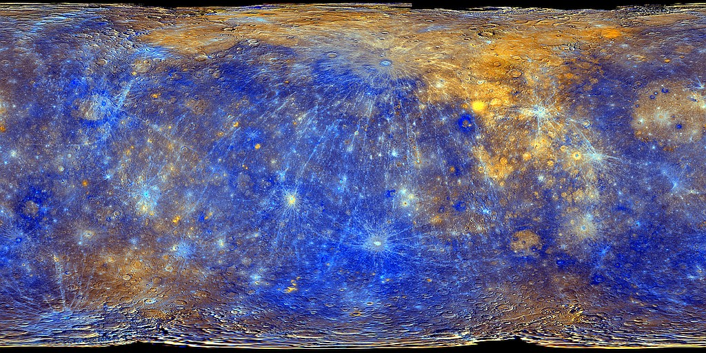
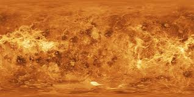
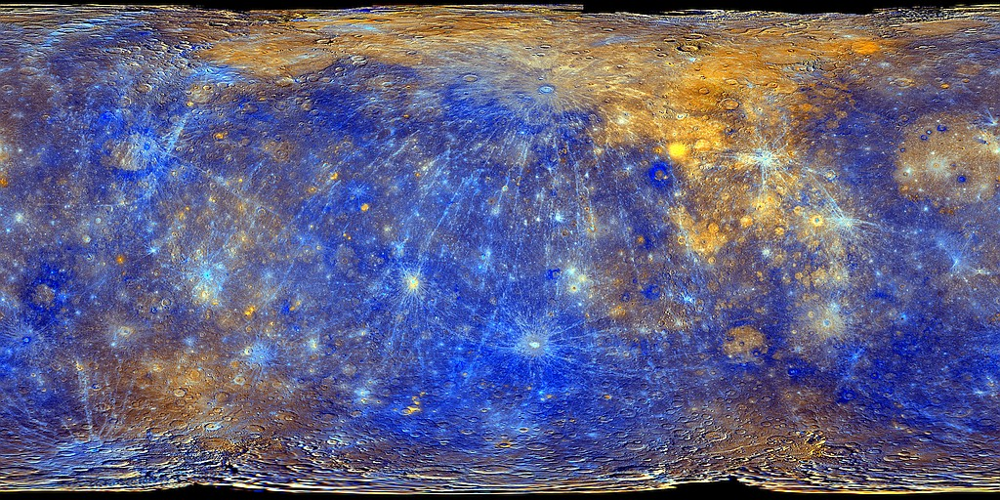
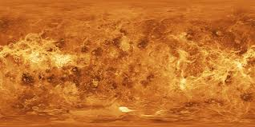
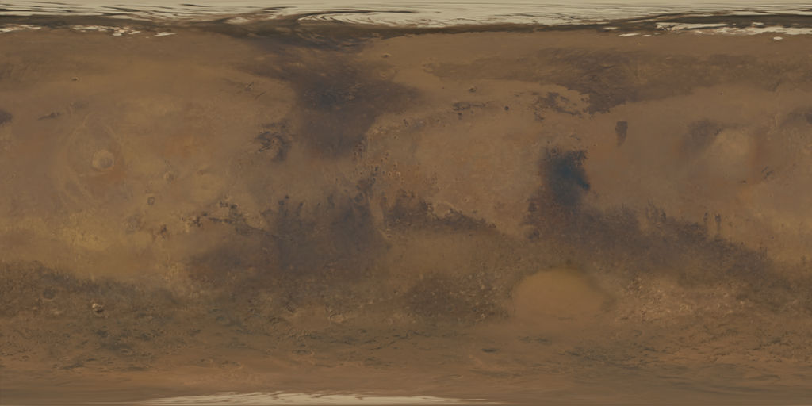
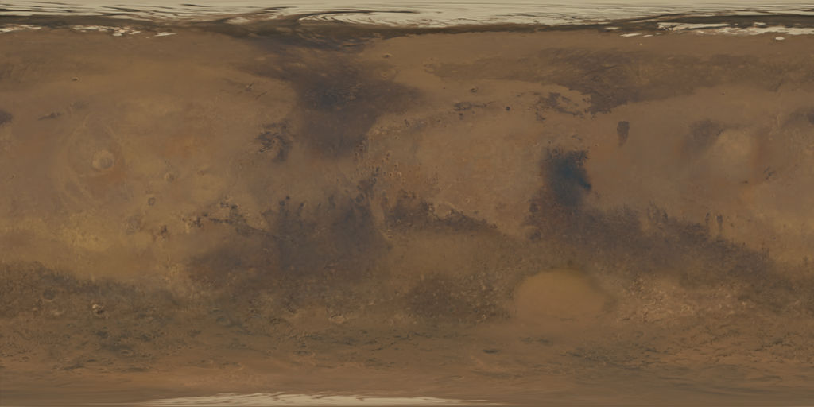
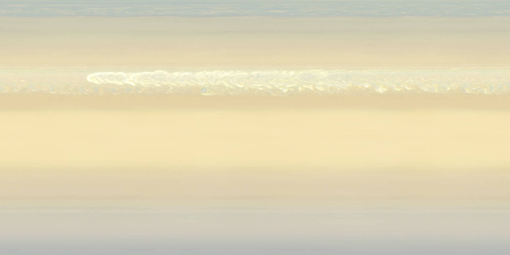
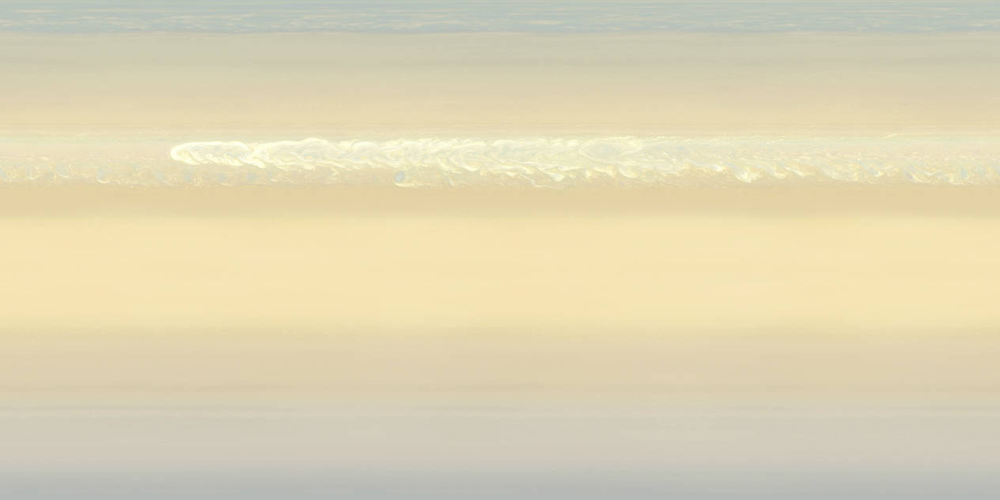
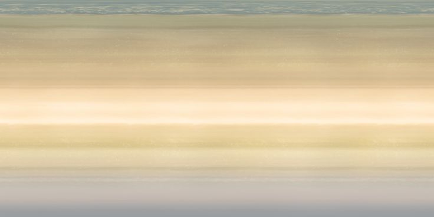
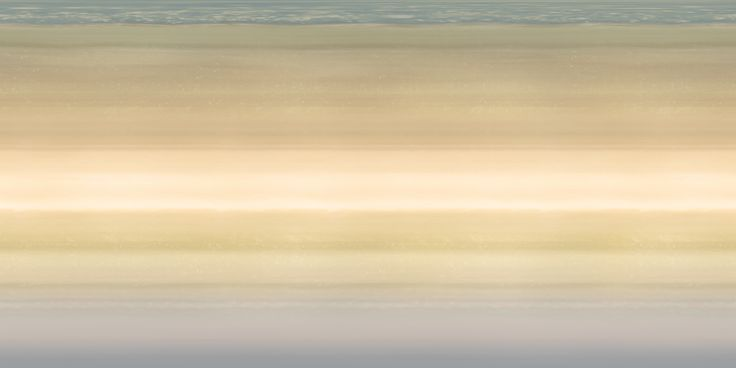

Use the sliders to adjust camera position within the solar system. To have the camera follow a planet, use the drop down. To stop following, set the dropdown to 'none'. To enable/disable orbit lines, use the button. Note: Not to scale
 



 

 



 
